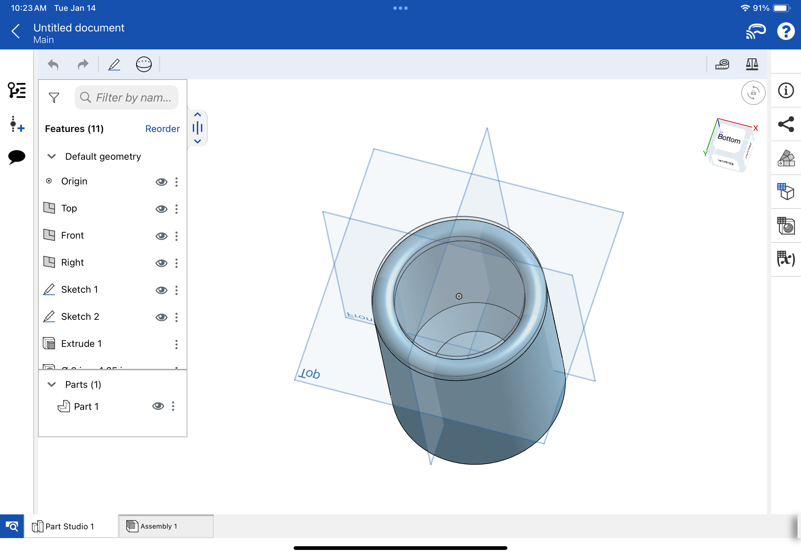
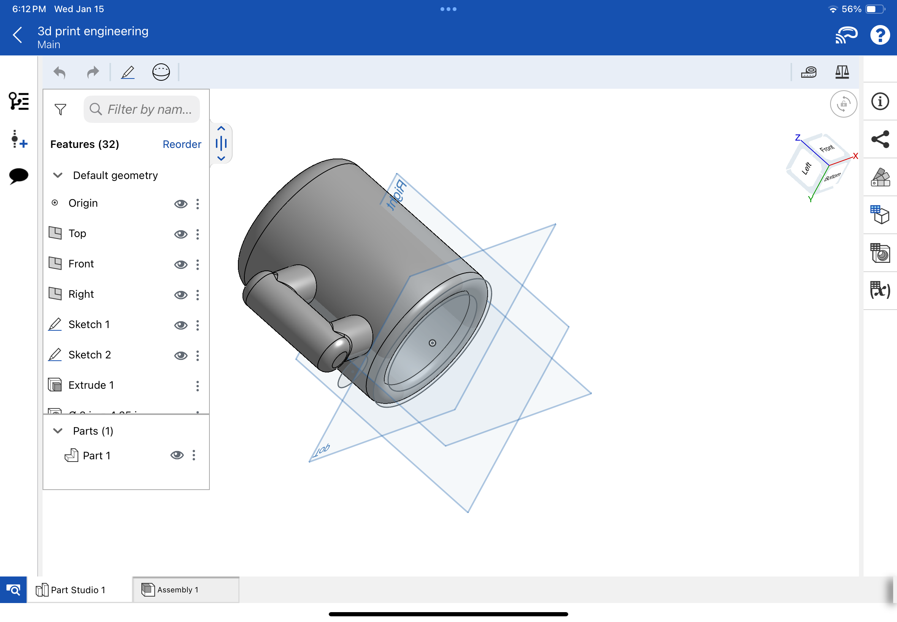

3D Printing Design
Our first assignment in class after coming back from winter break was to create 3D printed object that could only be made using additive processes, and to 3D scan an object, I chose to focus on making the 3D printed object first, as I thought it would be the longer task of the two. My choice of design was to make a small mug.
To begin, I chose to use Onshape for this project, as it is the software I am the most comftorable using. The first step was to sketch a circle which I the extruded to create the body of the mug.

I then made a hole in the center of the cylinder, to create the area for the liquid. I left a decently sized wall around it to prevent the mug from becoming too hot or cold. I then rounded the edges on the top and bottom, as well as adding a slope on the inside bottom
The next step was to create a cylinder the would serve as the handle. I then created a smaller and differently oriented cylinder to connect the hadle to the main body, which was then mirrored.
Following this, the two partd are combined to make them easier to work with, and are then moved into the intended place on the mug body. Its edges are then smoothed to make it easier to hold.

The parts are then combined for printing, and the model is completed!
3D scanning
The other part of this project was to 3D scan an object. I used this app I found called Scaniverse which seemed to work well enough, and I scanned some LEGOs I have to test it.

I am currently working on building the LEGO Notre Dame Cathedral. I decided to try to scan it first, as it is near where I work. This is a photo of the build as it is currently.

After scanning the build from many different angles, this is what the scan showed. Relatively good I think.

I decided to try to scan something smaller next, so I went for an old LEGO Audi R18 endurance car. This is a photo of it on a table.

After doing the same process of scanning it from various angles, the car came out like this as a scan. It also looks relatively good.